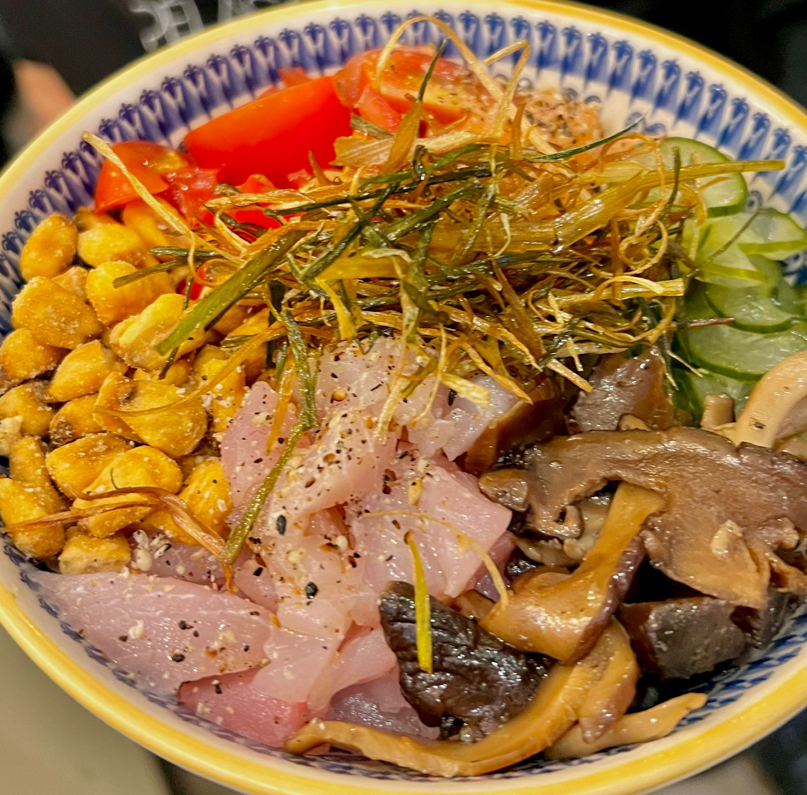
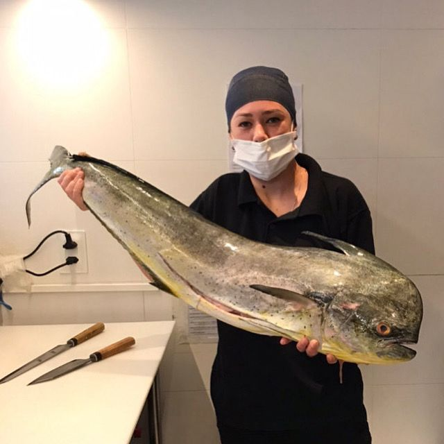
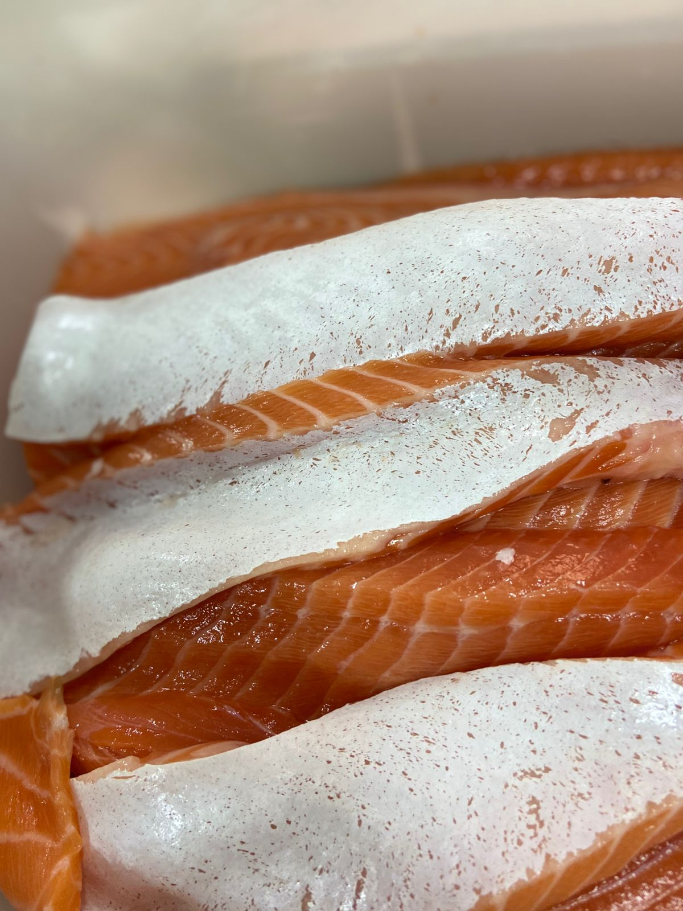

Início / Mentoria
Mentoria Profissional
Áreas de formação.
Cinco pilares da culinária tradicional japonesa — cada um com trilha própria de conteúdo, prática e aplicação profissional.
Cinco pilares da culinária tradicional japonesa — cada um com trilha própria de conteúdo, prática e aplicação profissional.

Shari, peixes, cortes, nigiri, sashimi e maki.
Conhecer a formação →
Sequência, ritmo e leitura do cliente.
Conhecer a formação →
Alta cozinha tradicional e sazonalidade.
Conhecer a formação →
Dashi, arroz, sopas e conservas.
Conhecer a formação →
Pequenos pratos, frituras e grelhados.
Conhecer a formação →Profissionais de sushi e gastronomia, chefs e cozinheiros que desejam aprofundar a culinária japonesa, e empreendedores que querem elevar o padrão de um restaurante ou delivery.